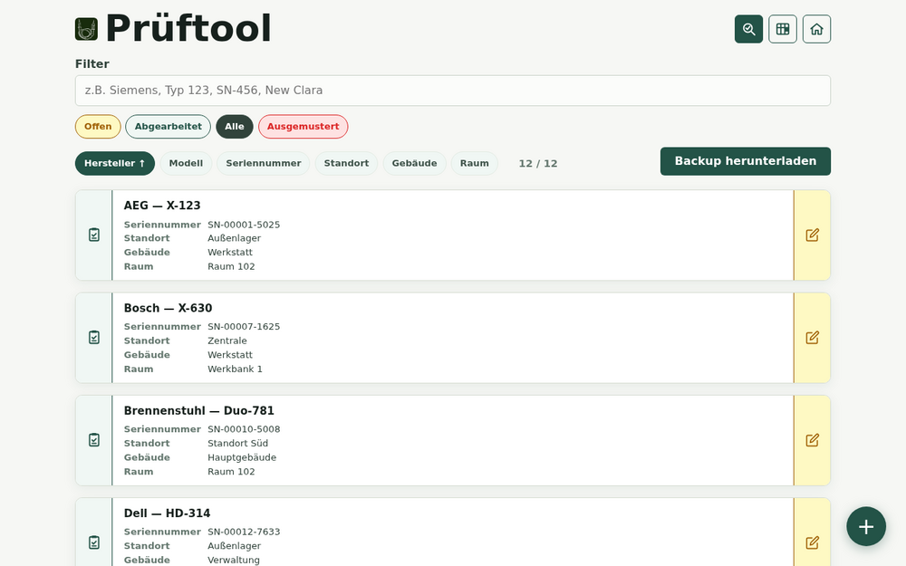
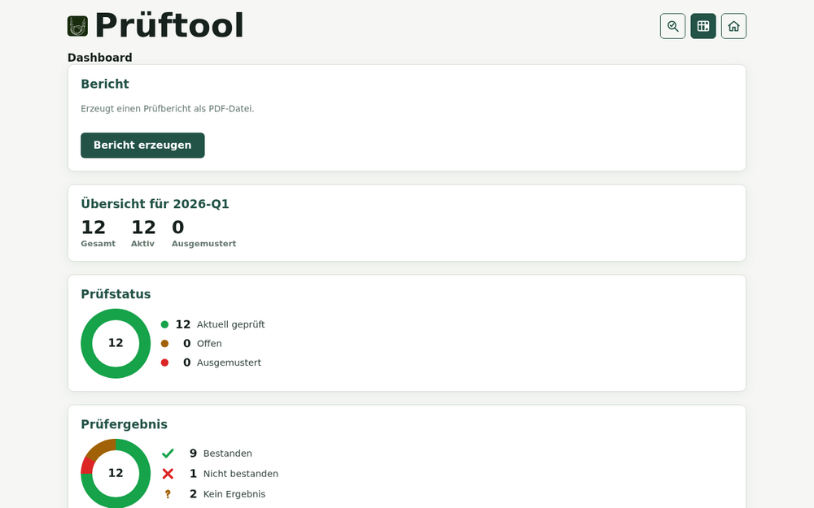
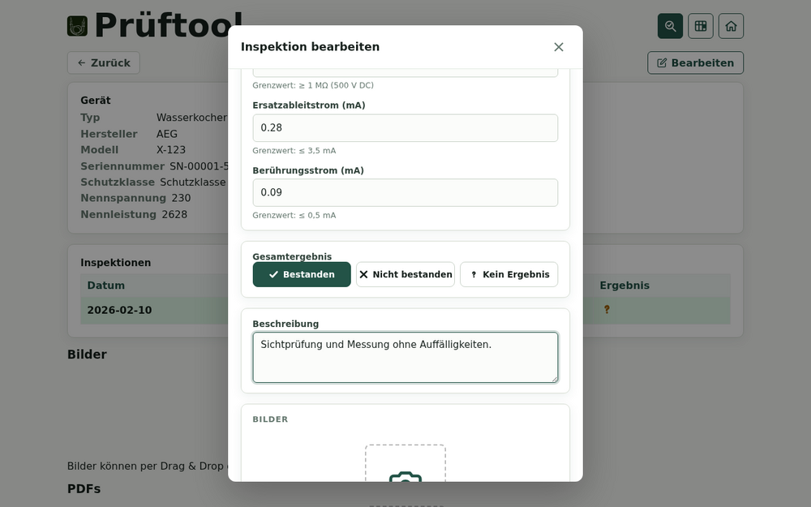
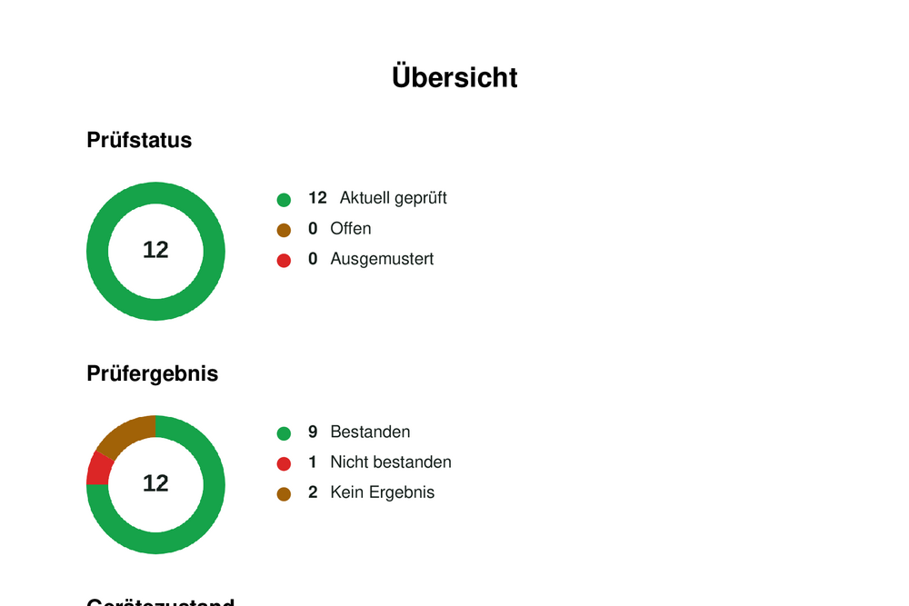
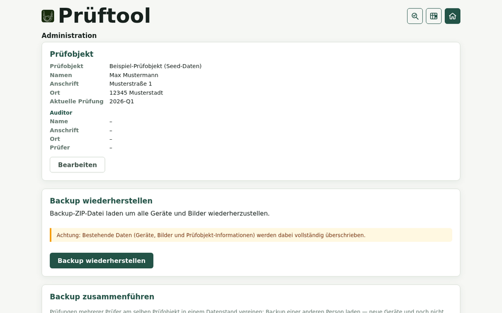
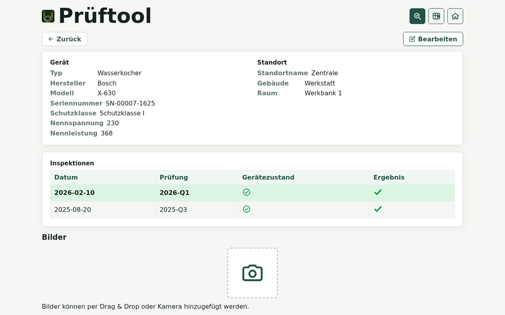

Geräteverwaltung
Typ, Hersteller, Modell, Seriennummer, Schutzklasse, Leistung und Standort übersichtlich erfassen.
Prüftool unterstützt kleine Handwerksbetriebe, Hausmeisterservices und Werkstätten bei der regelmäßigen Prüfung ortsveränderlicher elektrischer Geräte nach DGUV Vorschrift 3 und DIN VDE 0701-0702 – von der Geräteerfassung über die Prüfrunde bis zum fertigen PDF-Bericht. Vollständig offline, ohne Cloud oder Server: Alle Daten bleiben lokal und die Prüfhistorie jedes Geräts lückenlos über Jahre nachvollziehbar.

Prüftool bildet den kompletten Ablauf einer Prüfrunde ab – ohne Server, ohne Datenbankinstallation und ohne unnötige Verwaltungssoftware.

Typ, Hersteller, Modell, Seriennummer, Schutzklasse, Leistung und Standort übersichtlich erfassen.

Sicht- und Funktionsprüfung sowie Schutzleiter-, Isolations-, Ersatzableit- und Berührungsstrom erfassen.

Fortschritt, offene Prüfungen, Ergebnisse und Gerätezustände auf einen Blick.

Mit einem Klick vollständige Berichte mit Deckblatt, Zusammenfassung, Diagrammen und Prüfergebnissen erzeugen.

Geräte, Prüfhistorie, Bilder und Dokumente als ZIP sichern und auf einem anderen Rechner wiederherstellen.

Neue Prüfrunden anlegen, ohne alte Ergebnisse zu überschreiben. Die Historie eines Geräts bleibt erhalten.
Ein fertiges Demo-Datenset mit 12 Beispielgeräten (verschiedene Hersteller, Typen und teils mehreren Prüfrunden) macht es einfach, Prüftool ohne eigene Geräte zu testen.
Die ZIP-Datei enthält Beispielgeräte samt Prüfhistorie und lässt sich genauso wie ein normales Backup in die App einspielen.
demodatenset.zip auswählen
⚠ Achtung: Bestehende Daten (Geräte, Bilder und Prüfobjekt-Informationen) werden dabei vollständig überschrieben – am besten auf einer Test-Instanz einspielen.
Die Oberfläche ist auf einen praktischen Prüfeinsatz ausgelegt – auch direkt vor Ort.
Stammdaten, Standort, Bilder und Dokumente hinzufügen.
Eine aktuelle Prüfrunde festlegen und offene Geräte abarbeiten.
Prüfergebnisse und Messwerte direkt am Gerät erfassen.
Ergebnisse auswerten und einen vollständigen PDF-Bericht erzeugen.
Große Gerätebestände in wenigen Schritten aus Excel übernehmen und mehrere Prüfer unabhängig voneinander an demselben Prüfobjekt arbeiten lassen – ganz ohne Server.
Geräte aus Excel- (xlsx, xls) oder CSV-Dateien in vier Schritten anlegen oder als fertige Tabelle exportieren – ideal für viele gleichartige Geräte.
STL-00001 … STL-00200)Jeder Prüfer arbeitet offline auf seinem eigenen Gerät. Die Ergebnisse werden anschließend über „Backup zusammenführen“ zu einem gemeinsamen Datenstand vereint.
Nach dem ersten Laden funktioniert die PWA vollständig ohne Internetverbindung. Geräte, Bilder, PDFs und Prüfobjekt-Daten werden lokal im Browser gespeichert.
Direkt im Browser starten, als PWA installieren oder den Quellcode auf GitHub ansehen.